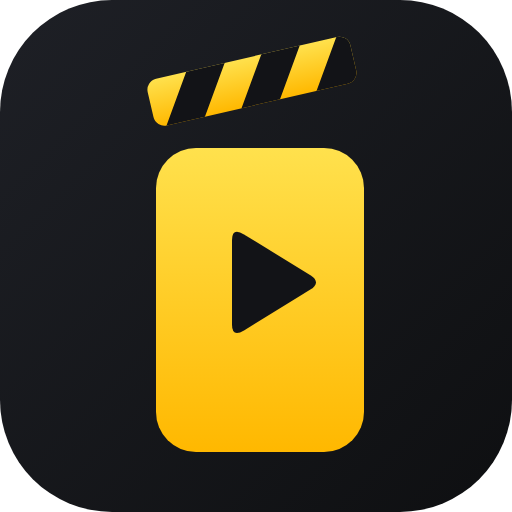

Long videos in. Ready-to-post Shorts out.
Shorts Video Studio is a desktop app that turns a sermon, talk, podcast or interview into short vertical clips: it finds the strongest moments, frames the speaker (or the whole slide), adds animated captions, and helps you post them to YouTube and other platforms.

Finds the best moments
Transcribes your video and ranks complete, self-contained segments, with whole-sentence lead-in and follow-on so clips make sense on their own.
Frames it for vertical
Follows the person speaking and switches to the full frame for slides and title cards, so nothing important is cut off.
Captions that pop
Word-by-word animated captions in the font and size you choose, plus caption files for editing.
Post where you want
Upload to your YouTube channels with your own Google sign-in, schedule posts across channels, and prepare posts for TikTok, Instagram, Facebook and more.
Local processing, with connections you choose
Transcription, framing and rendering run on your Mac. Use built-in rules or a local Ollama model for clip selection and writing, or choose a cloud AI service in Settings. When you choose cloud AI, relevant transcript text and prompts are sent to that provider. Publishing sends your selected video directly to YouTube. We do not receive your project media through normal processing. Optional country-level usage reporting is off until you consent. If you need help, you can review and send an encrypted technical support report from the app; media files are not attached.
Download for Mac — version 0.2.26
Signing in to YouTube
When you connect a channel, you sign in on Google's own page; your password is never seen or stored by the app. Shorts Video Studio asks Google for two permissions only:
- Manage your YouTube videos (
youtube.upload), to upload the clips you choose to publish. - View your YouTube account (
youtube.readonly), to show which channel is connected and to confirm each upload's status.
See the Privacy Policy for exactly how this information is handled.
Trial and subscriptions
Start with a seven-day trial, with no payment card required. Subscribe for $9.99 USD/month, or annually for $67.15 in the first year, $71.10 in the second year, then $79/year. One discount applies per billing period; introductory and seasonal discounts do not combine. Card payment is the default, with PayPal available as an alternative. Subscriptions renew until cancelled. Saved projects and completed videos remain available if access expires.
Contact
Questions or support: shortsstudio.support@gmail.com